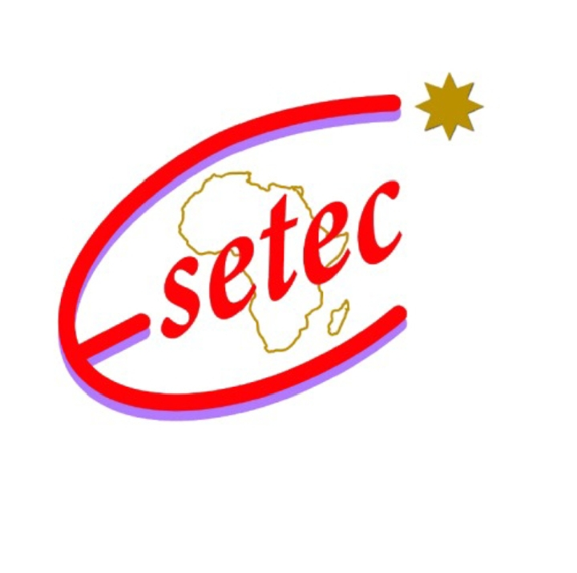
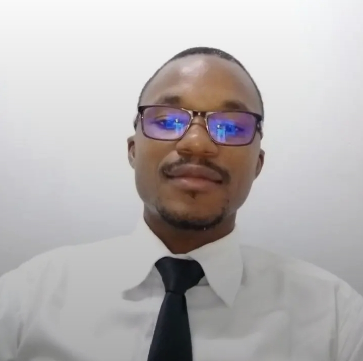
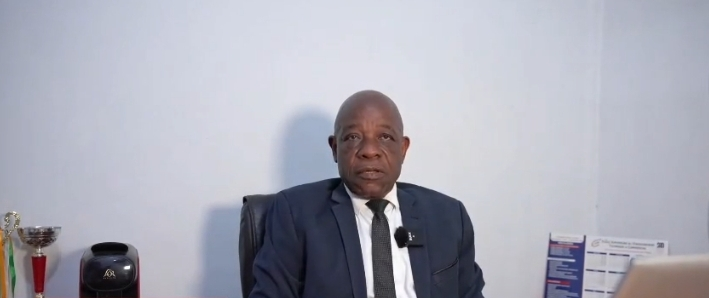
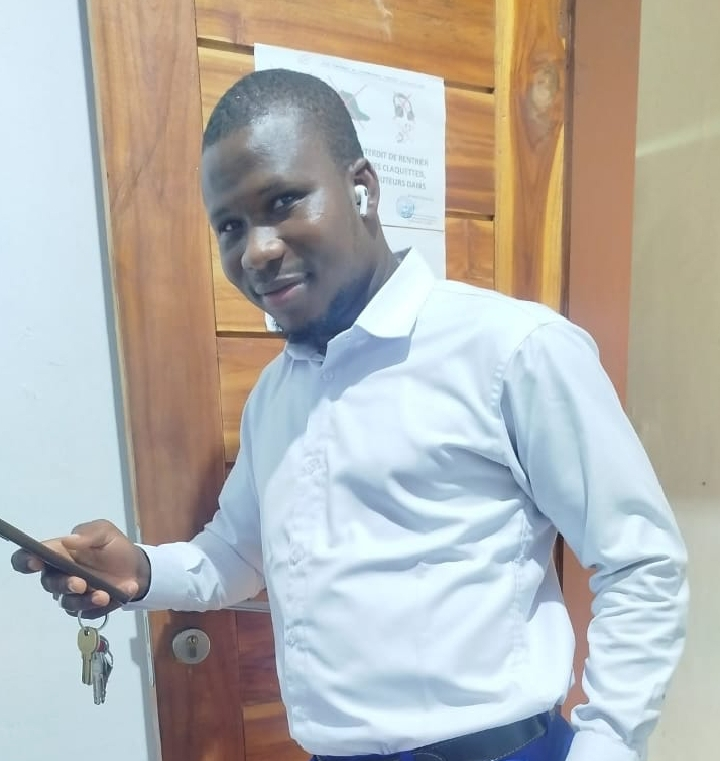

Former des leaders responsables, créatifs et prêts pour les métiers de demain. On mise sur l’innovation pédagogique, l’alternance et l’accompagnement personnalisé de chaque étudiant.
Devenir le top 5 des universités privées d’Afrique de l’Ouest pour l’employabilité et la recherche appliquée, avec un campus 100% digital et durable.
Création avec 120 étudiants pionniers et une vision : révolutionner l’éducation supérieure en Côte d’Ivoire.
Reconnaissance CAMES + ouverture de 3 laboratoires de recherche high-tech en IA et cybersécurité.
25 partenariats entreprises, 92% d’employabilité à 6 mois. Ouverture du campus de Yamoussoukro.
Lancement de notre plateforme immersive VR pour apprendre depuis partout en Afrique.

Informaticien de L'école

DG ESETEC

Inspecteur de filières